RETHINK,
Portfolio
About
Résumé
In ideas and discussion,
there is action and hope.
OBJECTIVE_
The main objective is to redesign a conference of my choice. The conference I choose is In Visible Talk 2020. The main goal in In Visible Talk 2020 is to look beyond singular design problems and move toward fixing the larger social issues we can no longer ignore in recent days.
APPROACH_
I try to emphasize the process of solving a problem, which is retrying. The only way to succeed is to keep trying, keep failing, learn from the mistake and try again. My approach is to emphasize that retrying could be a fun thing, and by retrying, we can open more possibilities to the solution.
The main objective is to redesign a conference of my choice. The conference I choose is In Visible Talk 2020. The main goal in In Visible Talk 2020 is to look beyond singular design problems and move toward fixing the larger social issues we can no longer ignore in recent days.
APPROACH_
I try to emphasize the process of solving a problem, which is retrying. The only way to succeed is to keep trying, keep failing, learn from the mistake and try again. My approach is to emphasize that retrying could be a fun thing, and by retrying, we can open more possibilities to the solution.
In Visiable Talk 2021 conference redesign
 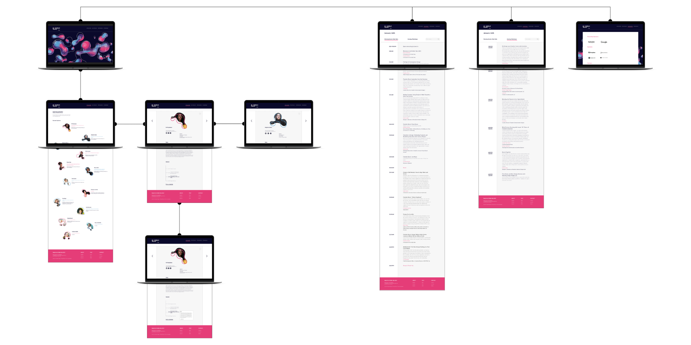
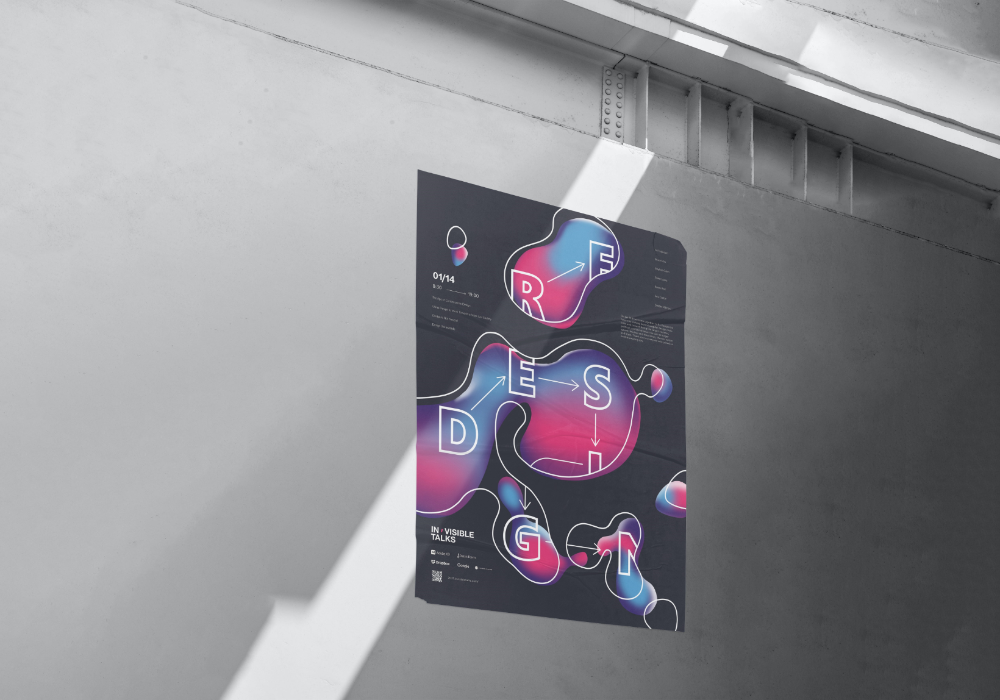
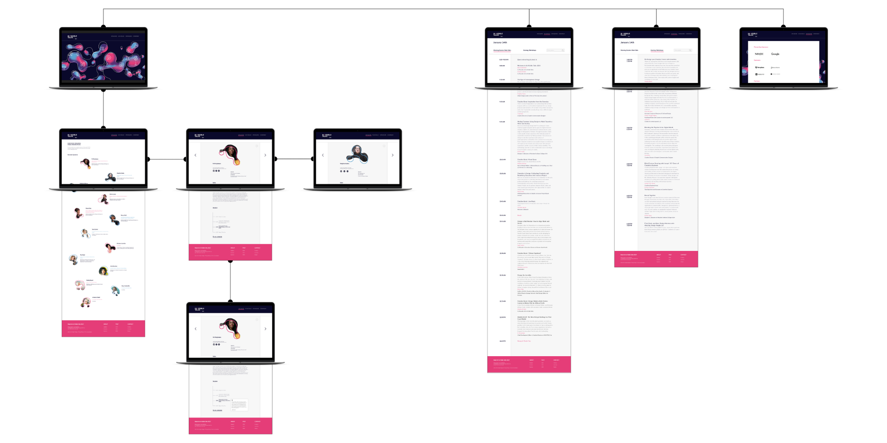
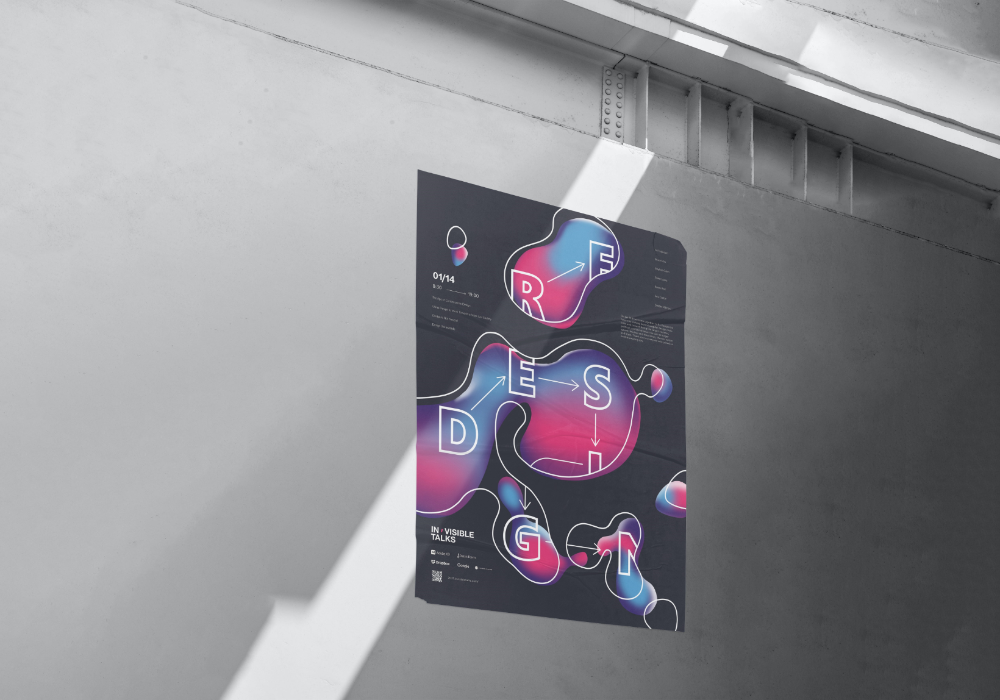

 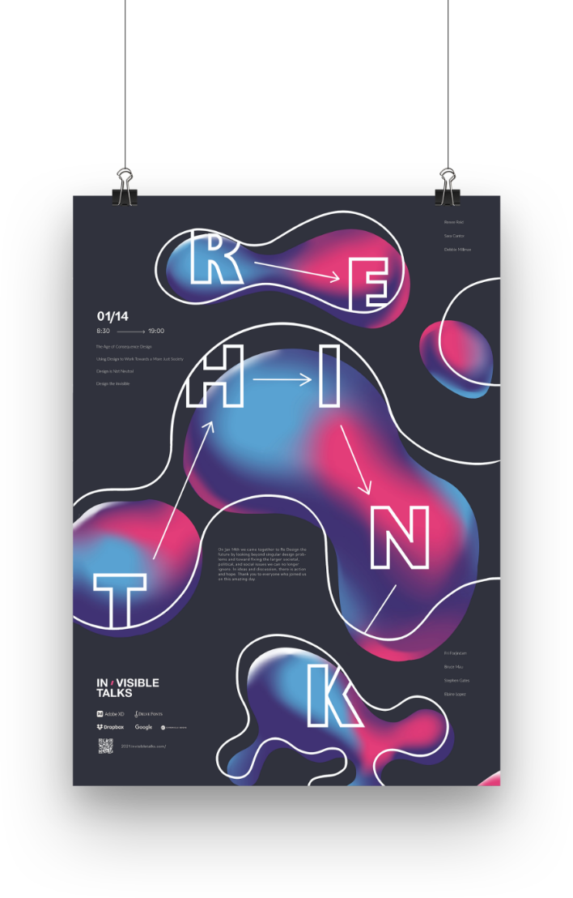
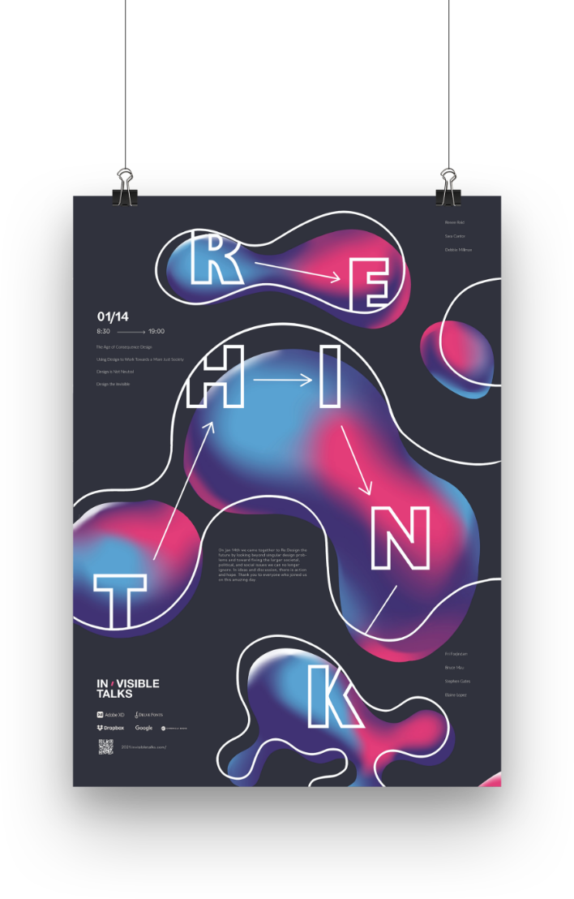
 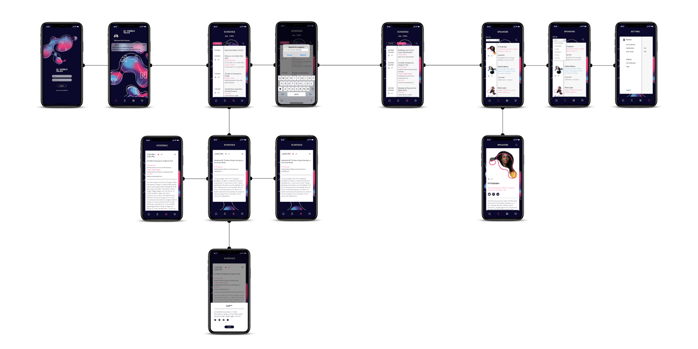
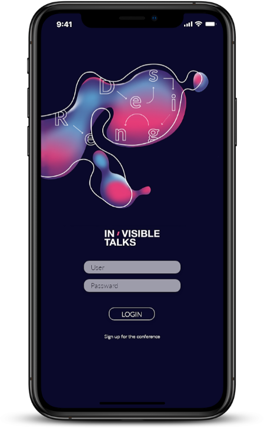
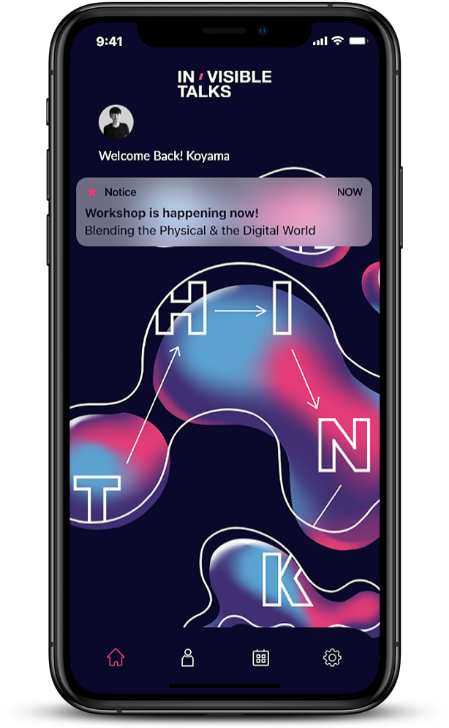
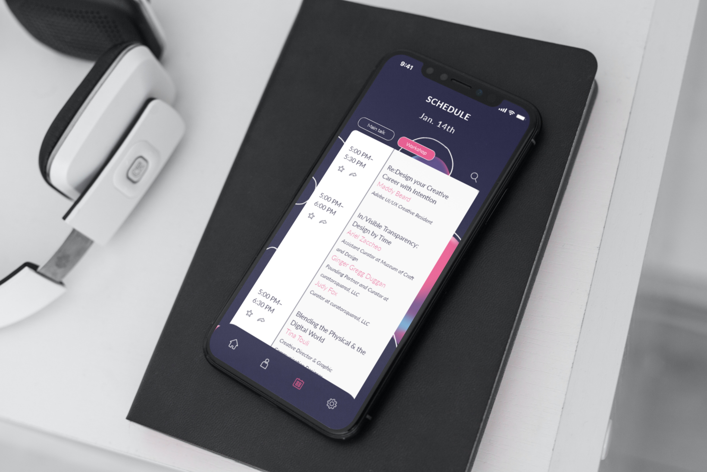
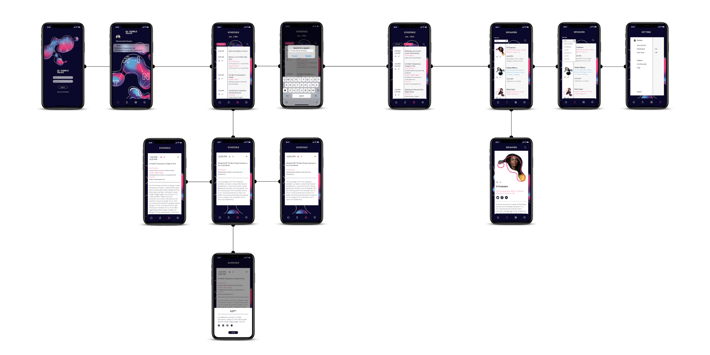
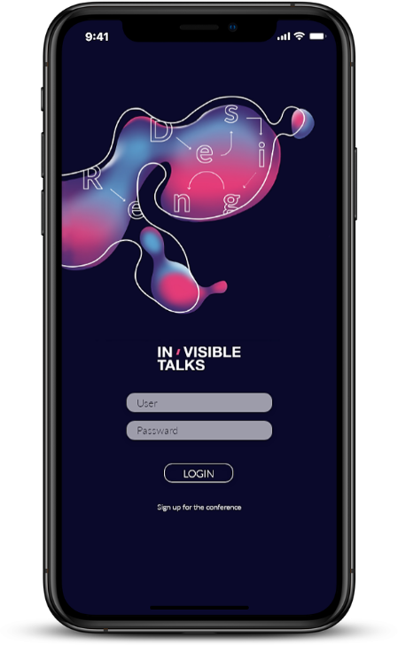
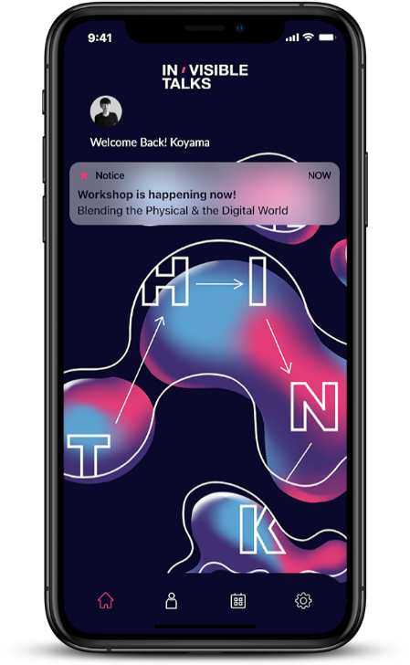
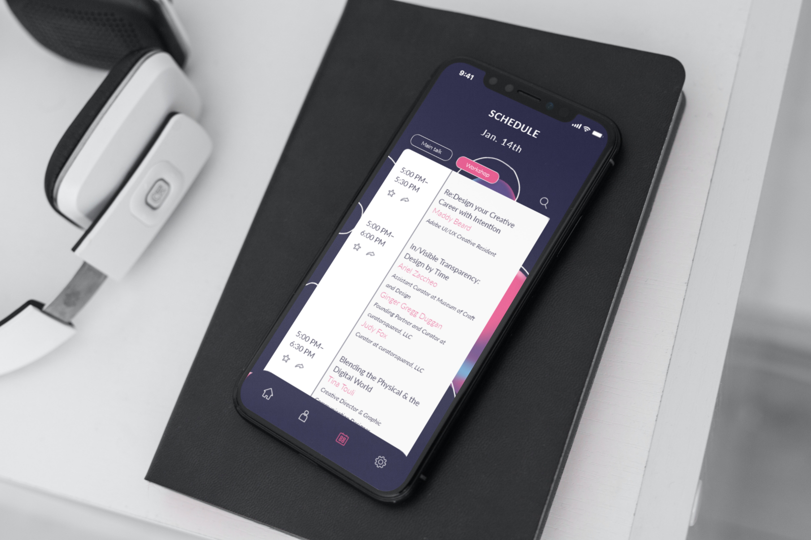

 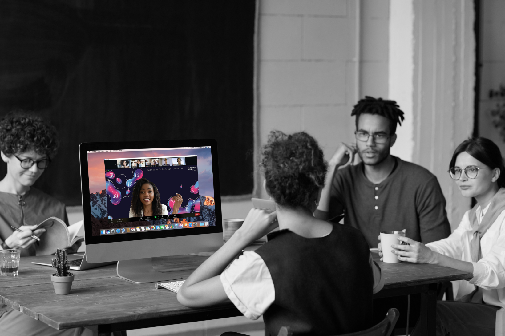
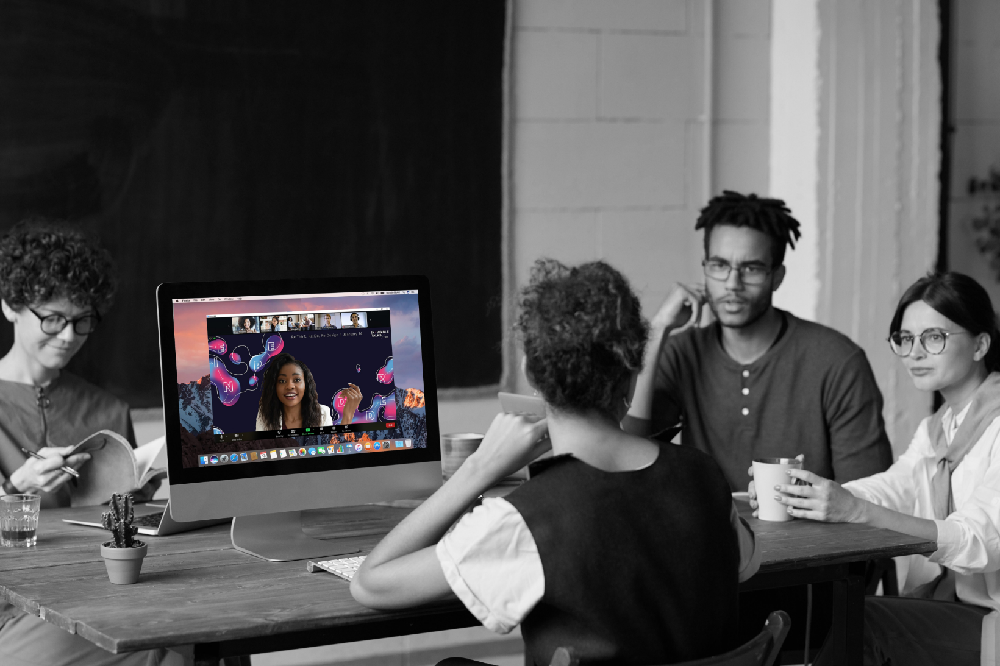
 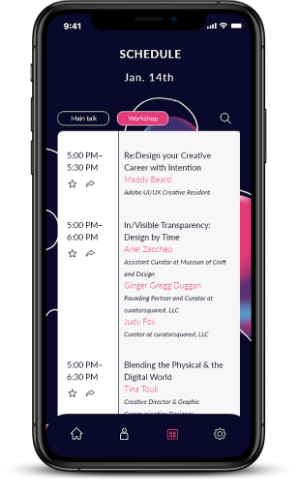
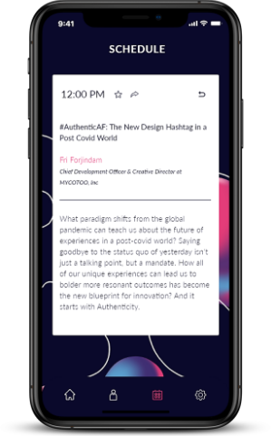
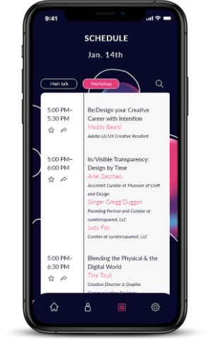
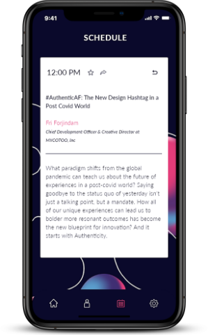
 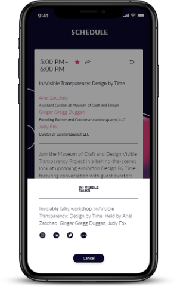
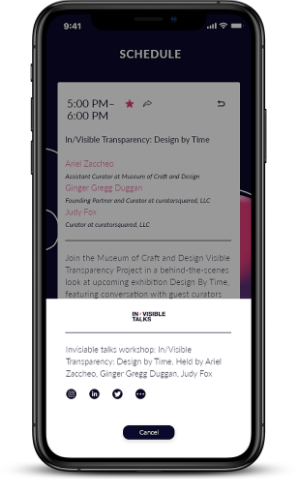
© 2021 by MengYang Lee
All Right Reserved.
No part of this publication can be reproduced without expressed permission from MengYang Lee.
All Right Reserved.
No part of this publication can be reproduced without expressed permission from MengYang Lee.


< PREVIOUS
NEXT >
Seeing is not believeing
See through eyes of an animal


BACK TO TOP
Works
REDO, DEDESIGN_
MENGYANG
LEE
LEE